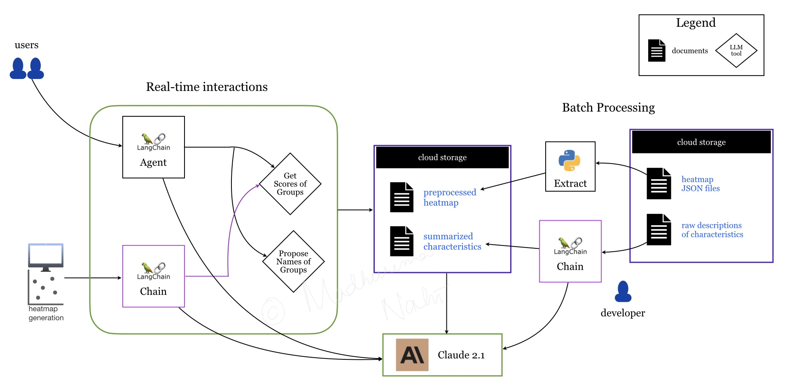

Generative AI (GenAI) Projects
Healthcare Q&A virtual assistant
A healthcare technology start-up client wanted
to improve the customer experience of their
application interface by incorporating GenAI.
At the current state, the interface would perform
clustering on the biopharmaceutical and medtech datasets
at the backend and output the results
as heatmaps representing the different groups.
The clients wanted to build a Q&A chatbot which would
assist both experts and non-medical users
to easily gain insights about these groups.
I paired up with another data scientist to develop
a prototype chatbot powered by the
Anthropic Claude LLM on AWS Bedrock.
Ingesting data as-is in the LLM prompt
increased latency, token usage and thus cost.
Pre-processing data to extract relevant information
and summarizing it helped to improve accuracy and reduce
latency.
Implementing LLM agent with carefully
designed prompt and the appropriate tools provided
a flexible framework to answer various types questions,
as well as the capability to expand the scope of
questions in the future.
Solution architecture

LLM chain
to summarize descriptions
of characteristics of each group which represent
various medical conditions or symptoms.
LLM chain
to propose a name for each group/clusters
from the heatmaps.
LangChain agent
to answer questions about the groups.
At the end of the engagement we were able to deliver a fully functioning chatbot that could be integrated with their existing application interface. (Note: We were not responsible for the front-end development.) Knowledge support tool for sales representatives
A leading equipment rental firm chose to build
a GenAI knowledge-based chatbot as their
inaugural digital innovation initiative.
This tool would leverage custom client data
in order to assist sales representatives
respond to customer inquiries quicker,
serve as an internal training hub and
replace manual document searches.
In addition, internal SMEs (subject matters experts)
needed the ability to review and update
any response that was flagged by the end users
as an incorrect or incomplete.
I worked with a cloud engineer to deploy
this chatbot using OpenAI on AWS platform,
and implemented a RAG (Retrieval-Augmented Generation)
approach.
To understand their domain and provide relevant
answers from their data, various documents (both
structured - csv, json
and unstructured - pdf, html) were
ingested into S3 bucket
to create a knowledge base.
Employing RAG architecture was essential to augment
the OPenAI LLM model and
provide accurate responses.
Multiple Lambda functions were assigned
to handle different parts of the solution, i.e.,
processing input, returning OpenAI response,
updating database with feedback from SMEs etc.
Lex was the backbone of the solution,
providing all NLP and NLU capabilities to understand
user questions and determine best possible answers.
Solution architecture
insert image of solution architecture.
Describe solution in details.
(Note: This project had a front-end developer)
The chatbot provided accurate results
when tested extensively by the
users from the firm on a variety of questions.
There was also a ~22% reduction in response
time of customer inquiries.
Natural Language Processing (NLP) Projects
CPGCollaboratively led the implementation of a Delta Lakehouse solution on Azure Databricks and developed NLP pipelines with MLOps best practices for future scalability. This accelerated the data foundation roadmap by over a year, delivering improved visibility, uniformity, and consistency, and resulting in significant efficiency gains and millions of dollars in savings for one of the world's largest consumer packaged goods companies.
UtilityDirected the implementation of NLP pipelines in Azure Databricks for sentiment analysis and topic modeling to extract safety-related themes. Empowered the executive safety committee of a large Midwest utility client to refine policies, ensuring employee safety and reducing incident frequency and severity.